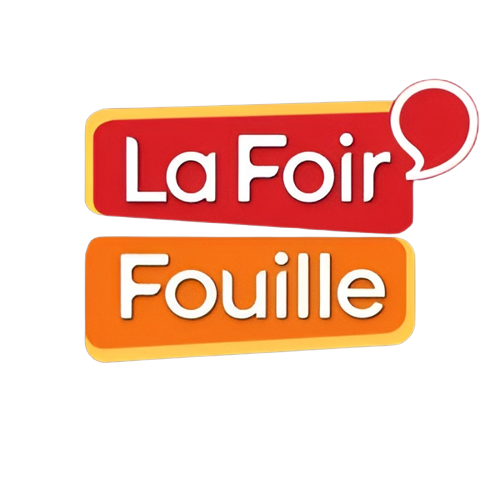

Agent de libre-service
En Juillet et Août 2022, j'ai occupé en intérim le poste d'agent de libre-service dans la chaîne de magasins
la Foir'Fouille, à Fougères, pour une durée de cinq semaines. Polyvalent, j'ai assuré des missions de
réception de commandes, mise en rayon, facing, aide à la clientèle, ou encore montage de meubles. J'ai ainsi
pu développer mon sens du travail d'équipe, ma rigueur, ainsi que ma capacité d'écoute au contact des
clients.
Opérateur de production
En Juillet 2022, j'ai occupé en intérim le poste d'opérateur de production dans l'usine de l'entreprise
Alliora, à Fougères, pour une durée d'une semaine et demie. J'ai effectué les tâches du travail à la chaîne,
notamment du collage, de la mise en sachet et de la mise en carton. J'ai ainsi pu développer mon sens du
travail d'équipe, ainsi que mon efficacité dans l'exécution de ces tâches.
Opération argent de poche
En Juillet 2021, j'ai participé à
l'opération argent de poche proposée par la ville de Fougères, pour une durée d'une semaine. Diverses missions
me furent attribué, comme le désherbage ou le nettoyage des espaces verts et des espaces communaux. Mais j'ai aussi
effectué des tâches de rangement et de nettoyage, ainsi que des travaux de peintures avec le CCAS de Fougères. J'ai ainsi
pu développer mon sens du travail d'équipe et ma rigueur.